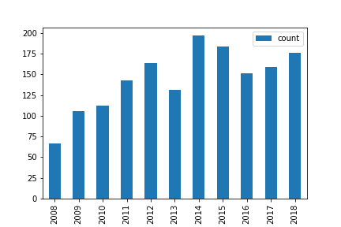

Analisis de las publicaciones de la revista Dyna-Colombia
Esta es una demostaacion de la creacion de un Dashboard estatico en GitHub Pages
Cantidad de articulos publicados por ano

Articulos mas citados
- Ayala, G., Agudelo, A., Vargas, R.Effect of glycerol on the electrical properties and phase behavior of cassava starch biopolymers [Efecto del glicerol sobre las propiedades eléctricas y comportamiento de fase en biopolímeros de almidón de yuca];2012,27
- Cabral, P., Zamyatin, A.Markov processes in modeling land use and land cover changes in Sintra-Cascais, Portugal [Procesos de markov en la modelización de alteraciones del uso e ocupación del suelo en Sintra-Cascais, Portugal];2009,24
- Rojas, D., Cipriano, A.Model based predictive control of a rougher flotation circuit considering grade estimation in intermediate cells [Control predictivo de un circuito de flotación rougher considerando estimación de leyes en celdas intermedias];2011,22
- Alcocer, W., Vela, L., Blanco, A., Gonzalez, J., Oliver, M.Major trends in the development of ankle rehabilitation devices [Principales tendencias en el desarrollo de dispositivos de rehabilitacion para tobillo];2012,21
- Parra, E.R., Arango, P.J.A., Palacio, V.J.B.XPS structure analysis of TiN/TiC bilayers produced by pulsed vacuum arc discharge [Análisis estructural de bicapas de TiN/TiC producidas por descargas pulsadas por arco en vacío];2010,17
- Montoya, F.G., Manzano-Agugliaro, F., López, J.G., Alguacil, P.S.Power quality research techniques: Advantages and disadvantages [Técnicas de Investigación en Calidad Eléctrica: Ventajas e Inconvenientes];2012,17
- González-Feliu, J., Cedillo-Campo, M.G., García-Alcaraz, J.L.An emission model as an alternative to O-D matrix in urban goods transport modeling [Un modelo de emisión como una alternativa a la generación de matrices O-D para modelar el transporte urbano de carga];2014,17
- Jiménez, A.R., Diazgranados, J.A., AMorantes, M.T.A.Electricity generation and wind potential assessment in regions of Colombia [Generación eléctrica y evaluación del potencial de energía eólica en regiones de Colombia];2012,17
- Pozo-Antonio, S., Puente-Luna, I., Lagüela-López, S., Veiga-Ríos, M.Techniques to correct and prevent acid mine drainage: A review [Técnicas correctoras y preventivas de las aguas ácidas de mina: Una revision];2014,16
- Avelar-Sosa, L., García-Alcaraz, J.L., Cedillo-Campos, M.G., Adarme-Jaimes, W.Effects of regional infrastructure and offered services in the supply chains performance: Case ciudad Juarez [Efectos de la infraestructura regional y los servicios en el desempeño de la cadena de suministro: Caso ciudad juárez];2014,16